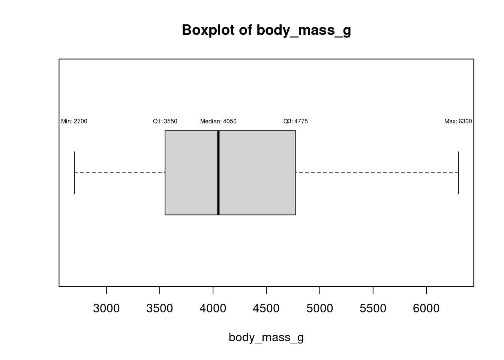
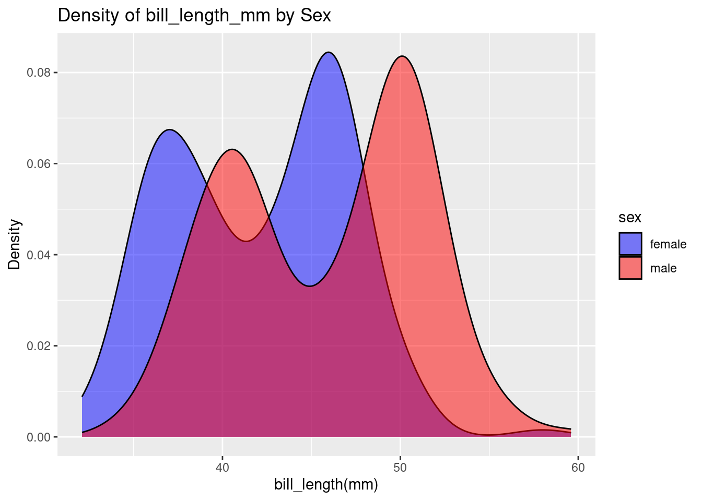
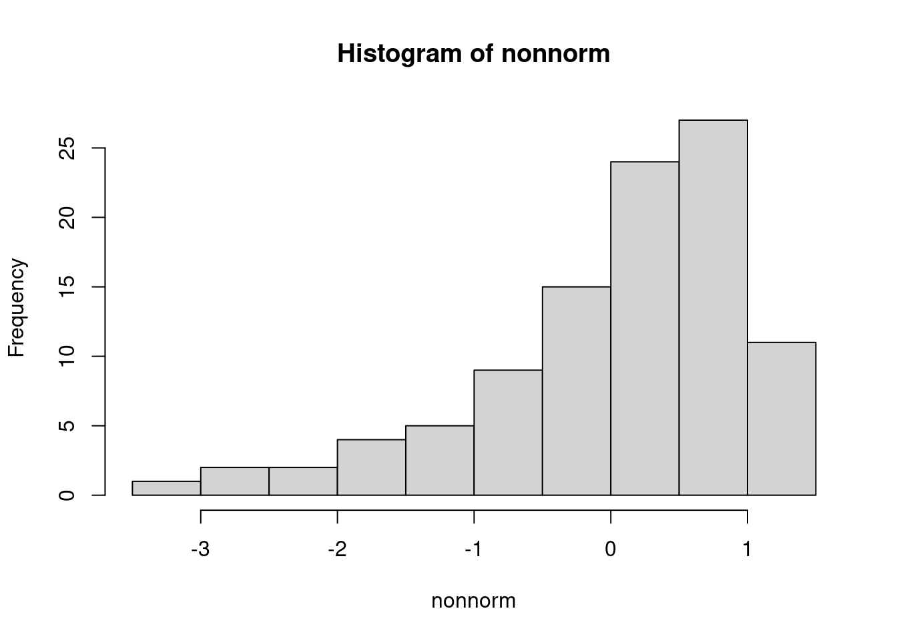

library(palmerpenguins)
library(ivo.table)
data<-penguins
dim(data)[1] 344 8The dataset palmerpenguins::penguins includes multiple size measurement variables that exhibit correlations.
library(palmerpenguins)
library(ivo.table)
data<-penguins
dim(data)[1] 344 8library(dplyr)Warning: package 'dplyr' was built under R version 4.3.2
Attaching package: 'dplyr'The following objects are masked from 'package:stats':
filter, lagThe following objects are masked from 'package:base':
intersect, setdiff, setequal, unionglimpse(data)Rows: 344
Columns: 8
$ species <fct> Adelie, Adelie, Adelie, Adelie, Adelie, Adelie, Adel…
$ island <fct> Torgersen, Torgersen, Torgersen, Torgersen, Torgerse…
$ bill_length_mm <dbl> 39.1, 39.5, 40.3, NA, 36.7, 39.3, 38.9, 39.2, 34.1, …
$ bill_depth_mm <dbl> 18.7, 17.4, 18.0, NA, 19.3, 20.6, 17.8, 19.6, 18.1, …
$ flipper_length_mm <int> 181, 186, 195, NA, 193, 190, 181, 195, 193, 190, 186…
$ body_mass_g <int> 3750, 3800, 3250, NA, 3450, 3650, 3625, 4675, 3475, …
$ sex <fct> male, female, female, NA, female, male, female, male…
$ year <int> 2007, 2007, 2007, 2007, 2007, 2007, 2007, 2007, 2007…class(data)[1] "tbl_df" "tbl" "data.frame"typeof(data)[1] "list"sum(is.na(data))[1] 19which(is.na(data)) [1] 692 960 1036 1304 1380 1648 1724 1992 2068 2073 2074 2075 2076 2112 2243
[16] 2283 2321 2333 2336library(ggplot2)
ggplot(data=penguins) +
geom_histogram(aes(x=body_mass_g, fill=species))`stat_bin()` using `bins = 30`. Pick better value with `binwidth`.Warning: Removed 2 rows containing non-finite outside the scale range
(`stat_bin()`).data[1,]# A tibble: 1 × 8
species island bill_length_mm bill_depth_mm flipper_length_mm body_mass_g
<fct> <fct> <dbl> <dbl> <int> <int>
1 Adelie Torgersen 39.1 18.7 181 3750
# ℹ 2 more variables: sex <fct>, year <int>data |> count(species)|>ivo_table()species | |||
|---|---|---|---|
n | Adelie | Chinstrap | Gentoo |
68 | 0 | 1 | 0 |
124 | 0 | 0 | 1 |
152 | 1 | 0 | 0 |
apply(data,2,mean)#this code will causing an error.Warning in mean.default(newX[, i], ...): argument is not numeric or logical:
returning NA
Warning in mean.default(newX[, i], ...): argument is not numeric or logical:
returning NA
Warning in mean.default(newX[, i], ...): argument is not numeric or logical:
returning NA
Warning in mean.default(newX[, i], ...): argument is not numeric or logical:
returning NA
Warning in mean.default(newX[, i], ...): argument is not numeric or logical:
returning NA
Warning in mean.default(newX[, i], ...): argument is not numeric or logical:
returning NA
Warning in mean.default(newX[, i], ...): argument is not numeric or logical:
returning NA
Warning in mean.default(newX[, i], ...): argument is not numeric or logical:
returning NA species island bill_length_mm bill_depth_mm
NA NA NA NA
flipper_length_mm body_mass_g sex year
NA NA NA NA which(is.na(data), arr.ind = TRUE) row col
[1,] 4 3
[2,] 272 3
[3,] 4 4
[4,] 272 4
[5,] 4 5
[6,] 272 5
[7,] 4 6
[8,] 272 6
[9,] 4 7
[10,] 9 7
[11,] 10 7
[12,] 11 7
[13,] 12 7
[14,] 48 7
[15,] 179 7
[16,] 219 7
[17,] 257 7
[18,] 269 7
[19,] 272 7dim(data)[1] 344 8library(tidyr)Warning: package 'tidyr' was built under R version 4.3.2df <- drop_na(data)
dfII<-na.omit(data)
dim(df)[1] 333 8dim(dfII)[1] 333 8all(colnames(data)%in%colnames(df))[1] TRUEall(row_number(data)%in%row_number(df))[1] FALSE# Calculate the mean and standard deviation Gentoo body mass in our data (sometimes base R is more sensible than dplyr)
mean(df$body_mass_g, na.rm=TRUE)[1] 4207.057sd(df$body_mass_g, na.rm=TRUE)[1] 805.2158numeric_columns <- sapply(df, is.numeric)
numeric_columns species island bill_length_mm bill_depth_mm
FALSE FALSE TRUE TRUE
flipper_length_mm body_mass_g sex year
TRUE TRUE FALSE TRUE is.vector(numeric_columns)[1] TRUEclass(numeric_columns)[1] "logical"typeof(numeric_columns)[1] "logical"apply(df[, numeric_columns], 2, mean, na.rm = TRUE)|> table()
17.1648648648649 43.9927927927928 200.966966966967 2008.04204204204
1 1 1 1
4207.05705705706
1 numeric_columns <- sapply(names(df), function(col) is.numeric(df[[col]]) && !grepl("year", col))#to remove column "year", which is numeric but must be excluded from the calculation.
lapply(df[, numeric_columns], mean)|> as.data.frame()|>ivo_table()bill_length_mm | |||
|---|---|---|---|
bill_depth_mm | flipper_length_mm | body_mass_g | 43.9927927927928 |
17.1648648648649 | 200.966966966967 | 4207.05705705706 | 1 |
library(flextable)
summary_result <- df |>
select(3:6) |> # Select the specified columns
summarise_all(list(min = min, max = max,median=median))
summary_result |> as_flextable()bill_length_mm_min | 32.1 |
bill_depth_mm_min | 13.1 |
flipper_length_mm_min | 172 |
body_mass_g_min | 2,700 |
bill_length_mm_max | 59.6 |
bill_depth_mm_max | 21.5 |
flipper_length_mm_max | 231 |
body_mass_g_max | 6,300 |
bill_length_mm_median | 44.5 |
bill_depth_mm_median | 17.3 |
library(flextable)
summary_result <- df |>
select(3:6) |> # Select the specified columns
summarise_all(list(min = min, max = max,median=median)) |> as_flextable()|> # Convert the table to a format that can be exported
save_as_docx(path = "~/Documents/DAiR/DAiR_2024_II/min_max.docx")Calculating the standard deviation of the sample:
sum of squares =\(∑(vector−mean(vector))^2\)
Divide the sum of squares by n - 1, where n is the number of observations (sample size):
variance= \(\frac {∑(vector−mean(vector))^2} {n−1}\)
Take the square root to find the standard deviation:
standard deviation=\(\sqrt\frac {∑(vector−mean(vector))^2} {n−1}\)
#Standard Deviation: the expected difference from the mean.
sd(df$bill_length_mm)[1] 5.468668result <- sqrt(sum((df$bill_length_mm - mean(df$bill_length_mm))^2 / (length(df$bill_length_mm) - 1)))
print(result)[1] 5.468668std = function(x) sqrt(var(x))
std(df$bill_length_mm)[1] 5.468668df %>%
summarise(across(where(is.numeric), var, na.rm = TRUE))#the "year" column included in the standard deviation calculationWarning: There was 1 warning in `summarise()`.
ℹ In argument: `across(where(is.numeric), var, na.rm = TRUE)`.
Caused by warning:
! The `...` argument of `across()` is deprecated as of dplyr 1.1.0.
Supply arguments directly to `.fns` through an anonymous function instead.
# Previously
across(a:b, mean, na.rm = TRUE)
# Now
across(a:b, \(x) mean(x, na.rm = TRUE))# A tibble: 1 × 5
bill_length_mm bill_depth_mm flipper_length_mm body_mass_g year
<dbl> <dbl> <dbl> <dbl> <dbl>
1 29.9 3.88 196. 648372. 0.661df$year[1:10] [1] 2007 2007 2007 2007 2007 2007 2007 2007 2007 2007unique(df$year)#The distinct() function is because distinct() is designed to work with data frames, not vectors. [1] 2007 2008 2009df %>%
summarise(across(where(is.numeric) & !all_of("year"), ~ sqrt(var(.x, na.rm = TRUE))))# A tibble: 1 × 4
bill_length_mm bill_depth_mm flipper_length_mm body_mass_g
<dbl> <dbl> <dbl> <dbl>
1 5.47 1.97 14.0 805.df$year<-as.Date(df$year)
df %>%
summarise(across(where(is.numeric), var, na.rm = TRUE))# A tibble: 1 × 4
bill_length_mm bill_depth_mm flipper_length_mm body_mass_g
<dbl> <dbl> <dbl> <dbl>
1 29.9 3.88 196. 648372.#Standard Error: If you’re putting error bars around means on a graph, use the SE.
sd(df$bill_length_mm)/sqrt(length(df$bill_length_mm))[1] 0.2996812df %>%
summarise(across(where(is.numeric), ~ sqrt(var(.x, na.rm = TRUE))))# A tibble: 1 × 4
bill_length_mm bill_depth_mm flipper_length_mm body_mass_g
<dbl> <dbl> <dbl> <dbl>
1 5.47 1.97 14.0 805.summary(df$bill_length_mm) Min. 1st Qu. Median Mean 3rd Qu. Max.
32.10 39.50 44.50 43.99 48.60 59.60 quantile(df$bill_length_mm,.5) 50%
44.5 quantile(df$bill_length_mm,c(.25,.75)) 25% 75%
39.5 48.6 IQR(df$bill_length_mm)#The distance between the first quartile and the third quartile[1] 9.1sort(df$bill_length_mm)[1:10] [1] 32.1 33.1 33.5 34.0 34.4 34.5 34.6 34.6 35.0 35.0A trimmed mean is indeed a robust method of averaging that excludes a specified percentage of extreme values from both ends of a dataset before computing the mean. This approach helps mitigate the influence of outliers and extreme values on the calculated average, making the trimmed mean more robust in the presence of skewed or distorted data distributions.
mean(df$bill_length_mm)[1] 43.99279mean(sort(df$bill_length_mm),trim=1/10) #Trimming (10%) from both ends.[1] 43.9839mean(sort(df$bill_length_mm),trim=0.2) #Trimming (20%) from both ends.[1] 44.02388median(df$bill_length_mm)#As we trim more and more, the value of the mean gets closer to the median.[1] 44.5A robust measure of how spread out a set of data is. The variance and standard deviation are also measures of spread, but they are more affected by extremely high or extremely low values and non normality.
median(abs(df$bill_length_mm - median(df$bill_length_mm)))*1.4826 #The choice of 1.4826 makes the value comparable with the standard deviation for the normal distribution[1] 6.96822mad(df$bill_length_mm)#a statistic that gives the average distance of the data points from the median.[1] 6.96822summary(df$bill_length_mm) Min. 1st Qu. Median Mean 3rd Qu. Max.
32.10 39.50 44.50 43.99 48.60 59.60 range(df$bill_length_mm)[1] 32.1 59.6bill_length = cut(df$bill_length_mm,breaks=c(32,39.5,44.5,48.6,max(df$bill_length_mm)))
table(bill_length)bill_length
(32,39.5] (39.5,44.5] (44.5,48.6] (48.6,59.6]
86 81 83 83 levels(bill_length)<-c("tiny","small","moderate","large")
prop.table(table(bill_length))*100bill_length
tiny small moderate large
25.82583 24.32432 24.92492 24.92492 sum(prop.table(table(bill_length))*100)[1] 100bill_length_mm:freq<-table(bill_length)
freqbill_length
tiny small moderate large
86 81 83 83 hist<-hist(df$bill_length_mm,
breaks = c(32.1,39.5,44.5,48.6,max(df$bill_length_mm)),
probability=TRUE,
col = "skyblue", # Color of bars
border = "black", # Color of bar borders
xlab = "Bill Length (mm)", # X-axis label
ylab = "Frequency", # Y-axis label
main = "Histogram of Bill Lengths", # Title of the plot
xlim = c(30, 60),
ylim = c(0,.08)
)
hist$breaks
[1] 32.1 39.5 44.5 48.6 59.6
$counts
[1] 86 81 83 83
$density
[1] 0.03489976 0.04864865 0.06079250 0.02265902
$mids
[1] 35.80 42.00 46.55 54.10
$xname
[1] "df$bill_length_mm"
$equidist
[1] FALSE
attr(,"class")
[1] "histogram"rug(jitter(df$bill_length_mm), side = 1, col = "red")
text(hist$mids, hist$density + 0.003, labels = hist$counts, col = "black")By setting probability=TRUE, the histogram displays the relative frequencies, making the total area under the histogram equal to 1. This means that the height of each bar represents the relative frequency (or proportion) of data points within each bin, effectively normalizing the histogram. This approach aligns the histogram with the concept of a probability density function, allowing for a better understanding of the distribution in terms of probabilities.
bp<- boxplot(df$bill_length_mm,horizontal=TRUE,main = "Boxplot of Bill Length", xlab = "Bill Length (mm)")
bp$stats [,1]
[1,] 32.1
[2,] 39.5
[3,] 44.5
[4,] 48.6
[5,] 59.6# Add annotations using the statistics from bp$stats
text(bp$stats[1, 1], 1.2, labels = paste("Min:", round(bp$stats[1, 1], 2)), pos = 3, cex = 0.5)
text(bp$stats[2, 1], 1.2, labels = paste("Q1:", round(bp$stats[2, 1], 2)), pos = 3, cex = 0.5)
text(bp$stats[3, 1], 1.2, labels = paste("Median:", round(bp$stats[3, 1], 2)), pos = 3, cex = 0.5)
text(bp$stats[4, 1], 1.2, labels = paste("Q3:", round(bp$stats[4, 1], 2)), pos = 3, cex = 0.5)
text(bp$stats[5, 1], 1.2, labels = paste("Max:", round(bp$stats[5, 1], 2)), pos = 3, cex = 0.5)for (col in names(numeric_columns)[numeric_columns]) {
bp <- boxplot(df[[col]], horizontal = TRUE, main = paste("Boxplot of", col), xlab = col)
stats <- bp$stats
# Add annotations using the statistics from bp$stats
text(stats[1, 1], 1.2, labels = paste("Min:", round(stats[1, 1], 2)), pos = 3, cex = 0.5)
text(stats[2, 1], 1.2, labels = paste("Q1:", round(stats[2, 1], 2)), pos = 3, cex = 0.5)
text(stats[3, 1], 1.2, labels = paste("Median:", round(stats[3, 1], 2)), pos = 3, cex = 0.5)
text(stats[4, 1], 1.2, labels = paste("Q3:", round(stats[4, 1], 2)), pos = 3, cex = 0.5)
text(stats[5, 1], 1.2, labels = paste("Max:", round(stats[5, 1], 2)), pos = 3, cex = 0.5)
}
male_Ge <- df %>%
filter(species == 'Gentoo' & sex == 'male')
female_Ge <- df %>%
filter(species == 'Gentoo' & sex == 'female')
male<- male_Ge[,6] #select body mass
male<- as.numeric(unlist(male)) #eliminate list
female<- female_Ge[,6]
female<- as.numeric(unlist(female)) #eliminate list
par(mfrow=c(1,2))
boxplot(male, main ="male", col ="blue")
boxplot(female, main = "female", col ="red")# Convert selected columns to matrix
mat <- as.matrix(df[, numeric_columns])
# Compute row-wise proportions
propR<- prop.table(mat, 1)|>as.data.frame()
sum(propR$bill_length_mm)[1] 3.341828# Compute column-wise proportions
propC<- prop.table(mat, 2)|>as.data.frame()
sum(propC$bill_length_mm)[1] 1boxplot(scale(mat))
library(ggplot2)
# Plotting histograms for all numeric columns
plot_list <- lapply(names(df)[sapply(df, is.numeric)], function(col) {
ggplot(df, aes_string(x = col)) +
geom_histogram(binwidth = .75, fill = "blue", color = "black") +
labs(title = paste("Distribution of", col), x = col, y = "Frequency") +
theme_minimal()
})Warning: `aes_string()` was deprecated in ggplot2 3.0.0.
ℹ Please use tidy evaluation idioms with `aes()`.
ℹ See also `vignette("ggplot2-in-packages")` for more information.# Arrange plots in a grid using gridExtra package
library(gridExtra)
Attaching package: 'gridExtra'The following object is masked from 'package:dplyr':
combinegrid.arrange(grobs = plot_list, ncol = 2) ggplot(df, aes(x = island, y = sex, fill = sex)) +
geom_violin(trim = FALSE) +
labs(title = "Comparison of Bill Depth by Island", x = "Island", y = "Bill Depth (mm)")ggplot(df, aes(x = bill_length_mm, fill = sex)) +
geom_density(alpha = 0.5) +
labs(title = "Density of bill_length_mm by Sex", x = "bill_length(mm)", y = "Density") +
scale_fill_manual(values = c("blue", "red")) 
ggplot(df, aes(x = bill_length_mm, fill = species)) +
geom_density(alpha = 0.5) +
labs(title = "Density of bill_depth_mm by Sex", x = "bill_depth(mm)", y = "Density") +
scale_fill_manual(values = c("blue", "red","green")) ggplot(df, aes(x = bill_length_mm, fill = species)) +
geom_density(alpha = 0.5) +
geom_density(aes(x = bill_depth_mm, fill = species), alpha = 0.5, color = "black", linetype = "dashed") +
labs(title = "Density of bill_length_mm and flipper_length_mm by Species", x = "Length (mm)", y = "Density") +
scale_fill_manual(values = c("blue", "red", "green"))ggplot(df, aes(x = body_mass_g, fill = species)) +
geom_density(alpha = 0.5) +
labs(title = "Density of Body Mass by Sex", x = "Body Mass (g)", y = "Density") +
scale_fill_manual(values = c("blue", "red","green")) # Optional: customizing fill colorspar(mfrow = c(1, 2)) # 2 graphs per page
# Create the violin plot
violin_plot <- ggplot(df, aes(x = species, y = bill_length_mm, fill = species)) +
geom_violin() +
theme_minimal() +
labs(title = "Violin Plot of Bill Length by Species",
x = "Species",
y = "Bill Length (mm)")
# Create a density plot of bill length
density_plot <- ggplot(df, aes(x = bill_length_mm, fill = species, color = species)) +
geom_density(alpha = 0.5) +
theme_minimal() +
labs(title = "Density Plot of Bill Length by Species",
x = "Bill Length (mm)",
y = "Density")
# Arrange the plots in a 1x3 grid
grid.arrange(violin_plot, density_plot, ncol = 2)unique(df$species)[1] Adelie Gentoo Chinstrap
Levels: Adelie Chinstrap Gentoogentoo = df %>%
filter(species=="Gentoo")
ggplot(data=gentoo) +
geom_histogram(aes(x=body_mass_g),fill="green")+
labs(title = "Histogram of Body Mass in Gentoo", x = "Body Mass (g)", y = "count") `stat_bin()` using `bins = 30`. Pick better value with `binwidth`.# Check normality assumption with a qqplot:
norm_check<-qqnorm(gentoo$bill_length_mm, pch=10,col="blue")
norm_check<-qqline(gentoo$bill_length_mm,col="red",lwd=1)norm_checkNULLlibrary("car")Loading required package: carData
Attaching package: 'car'The following object is masked from 'package:dplyr':
recodeqqnormplot<- qqPlot(gentoo$bill_length_mm)qqnormplot[1] 33 100library(performance)
check_normality(gentoo$bill_length_mm,sample.size=length(gentoo$bill_length_mm), main = "Y")Warning: Non-normality of raw detected (p = 0.020).ggplot(gentoo, aes(x = bill_length_mm)) +
geom_histogram(binwidth = 1, color = "black", fill = "lightblue") +
labs(title = "Histogram of Bill Length (mm)", x = "Bill Length (mm)", y = "Frequency")The rnorm() function in R generates a vector of random numbers sampled from a normal distribution. It requires three main arguments to define the characteristics of the distribution:n ,mean ,sd
#Example of Noemal distributed data
results = c();
mu = 0; sigma = 1
for(i in 1:500) {
X = rnorm(100,mu,sigma) # generate random data
results[i] = (mean(X) - mu)/(sigma/sqrt(100))
}
his_X <- hist(results,prob=T,xlim = c(-3,3))
his_X <- curve(dnorm(x, 0, 1), add = TRUE, col = "blue", lwd = 2)his_X$x
[1] -3.00 -2.94 -2.88 -2.82 -2.76 -2.70 -2.64 -2.58 -2.52 -2.46 -2.40 -2.34
[13] -2.28 -2.22 -2.16 -2.10 -2.04 -1.98 -1.92 -1.86 -1.80 -1.74 -1.68 -1.62
[25] -1.56 -1.50 -1.44 -1.38 -1.32 -1.26 -1.20 -1.14 -1.08 -1.02 -0.96 -0.90
[37] -0.84 -0.78 -0.72 -0.66 -0.60 -0.54 -0.48 -0.42 -0.36 -0.30 -0.24 -0.18
[49] -0.12 -0.06 0.00 0.06 0.12 0.18 0.24 0.30 0.36 0.42 0.48 0.54
[61] 0.60 0.66 0.72 0.78 0.84 0.90 0.96 1.02 1.08 1.14 1.20 1.26
[73] 1.32 1.38 1.44 1.50 1.56 1.62 1.68 1.74 1.80 1.86 1.92 1.98
[85] 2.04 2.10 2.16 2.22 2.28 2.34 2.40 2.46 2.52 2.58 2.64 2.70
[97] 2.76 2.82 2.88 2.94 3.00
$y
[1] 0.004431848 0.005296344 0.006306726 0.007482873 0.008846454 0.010420935
[7] 0.012231526 0.014305109 0.016670101 0.019356277 0.022394530 0.025816575
[13] 0.029654585 0.033940763 0.038706856 0.043983596 0.049800088 0.056183142
[19] 0.063156561 0.070740393 0.078950158 0.087796071 0.097282269 0.107406075
[25] 0.118157295 0.129517596 0.141459965 0.153948287 0.166937042 0.180371163
[31] 0.194186055 0.208307790 0.222653499 0.237131952 0.251644341 0.266085250
[37] 0.280343811 0.294305030 0.307851260 0.320863804 0.333224603 0.344818001
[43] 0.355532529 0.365262673 0.373910605 0.381387815 0.387616615 0.392531483
[49] 0.396080212 0.398224830 0.398942280 0.398224830 0.396080212 0.392531483
[55] 0.387616615 0.381387815 0.373910605 0.365262673 0.355532529 0.344818001
[61] 0.333224603 0.320863804 0.307851260 0.294305030 0.280343811 0.266085250
[67] 0.251644341 0.237131952 0.222653499 0.208307790 0.194186055 0.180371163
[73] 0.166937042 0.153948287 0.141459965 0.129517596 0.118157295 0.107406075
[79] 0.097282269 0.087796071 0.078950158 0.070740393 0.063156561 0.056183142
[85] 0.049800088 0.043983596 0.038706856 0.033940763 0.029654585 0.025816575
[91] 0.022394530 0.019356277 0.016670101 0.014305109 0.012231526 0.010420935
[97] 0.008846454 0.007482873 0.006306726 0.005296344 0.004431848qqPlot(X)
[1] 12 26check_normality(X,sample.size=100, main = "Y")OK: raw appear as normally distributed (p = 0.407).The rnonnorm() function in R generating a vector of random numbers sampled from a non-normal data with specified skewness and kurtosis using Fleishman’s Method.
#Example of Non-Noemal distributed data
library(detectnorm)
nonnorm <- numeric(0)
for(i in 1:500) {
nonnorm<- rnonnorm(n = 100, mean = 0, sd = 1, skew = -1, kurt = 1)$dat}
summary(nonnorm) Min. 1st Qu. Median Mean 3rd Qu. Max.
-3.40066 -0.37267 0.26446 0.02251 0.65110 1.31350 hist_n<-hist(nonnorm)
hist_n$breaks
[1] -3.5 -3.0 -2.5 -2.0 -1.5 -1.0 -0.5 0.0 0.5 1.0 1.5
$counts
[1] 1 2 2 4 5 9 15 24 27 11
$density
[1] 0.02 0.04 0.04 0.08 0.10 0.18 0.30 0.48 0.54 0.22
$mids
[1] -3.25 -2.75 -2.25 -1.75 -1.25 -0.75 -0.25 0.25 0.75 1.25
$xname
[1] "nonnorm"
$equidist
[1] TRUE
attr(,"class")
[1] "histogram"qqPlot(nonnorm)[1] 23 74check_normality(nonnorm, sample.size=100, main = "Y")Warning: Non-normality of raw detected (p < .001).#To check the homogeneity of variance across different groups
leveneTest(bill_length_mm ~ sex, data = df)Levene's Test for Homogeneity of Variance (center = median)
Df F value Pr(>F)
group 1 2.8244 0.09378 .
331
---
Signif. codes: 0 '***' 0.001 '**' 0.01 '*' 0.05 '.' 0.1 ' ' 1#p-value < 0.05: evidence of the unequal variances for the sample.
#Df: Degrees of freedom.
#F value: The test statistic for Levene's test.
#Pr(>F): The p-value associated with the test statistic.Since the p-value (0.09378) of leveneTest is greater than 0.05, we do not reject the null hypothesis. This suggests that there is no strong evidence against the assumption of homogeneity of variances across sex based on Levene’s test.
prop_sex<- table(df$sex)
prop_sex
female male
165 168 prop.test(prop_sex,conf.level = 0.95)
1-sample proportions test with continuity correction
data: prop_sex, null probability 0.5
X-squared = 0.012012, df = 1, p-value = 0.9127
alternative hypothesis: true p is not equal to 0.5
95 percent confidence interval:
0.4406707 0.5504259
sample estimates:
p
0.4954955 #X-squared: The test statistic for the chi-squared test.
#df: Degrees of freedom.
#Alternative hypothesis: Indicates whether the test is two-tailed.
#Confidence interval: Provides the 95% confidence interval for the true proportion p.
#Sample estimates: Provides the estimated proportion p from your sample.The p-value (0.9127) of prop.test is much greater than 0.05, indicating that there is no significant evidence to reject the null hypothesis. Therefore, there is no significant difference between the observed proportions of females and males
suitable when comparing means between two groups, under the assumption that the variances in both groups are equal.
t.test(df$body_mass_g,df$flipper_length_mm,conf.level = 0.99,var.equal = TRUE)
Two Sample t-test
data: df$body_mass_g and df$flipper_length_mm
t = 90.775, df = 664, p-value < 2.2e-16
alternative hypothesis: true difference in means is not equal to 0
99 percent confidence interval:
3892.085 4120.095
sample estimates:
mean of x mean of y
4207.057 200.967 #t: The t-statistic for the test.
#df: Degrees of freedom.
#p-value: The probability of observing a test statistic at least as extreme as the one observed, under the null hypothesis that there is no difference between the means of the two groups.
#Alternative hypothesis: Indicates whether the test is two-tailed (true difference in means is not equal to 0), which is typical for this test.
#Confidence interval: Provides the 99% confidence interval for the difference in means between the two groups.
#Sample estimates: Provides the sample means (mean of x for df$body_mass_g and mean of y for df$flipper_length_mm).The p-value is very small (less than 2.2e-16), indicating strong evidence against the null hypothesis. Therefore, based on this test, there is a significant difference between the mean body mass and mean flipper length in the sample. The confidence interval suggests that we are 99% confident that the true difference in means lies between 3892.085 and 4120.095. This analysis indicates that the body mass and flipper length are significantly different in the sample, based on the two-sample t-test. # Chi-Squared Test
#Contingency Table
str(df)tibble [333 × 8] (S3: tbl_df/tbl/data.frame)
$ species : Factor w/ 3 levels "Adelie","Chinstrap",..: 1 1 1 1 1 1 1 1 1 1 ...
$ island : Factor w/ 3 levels "Biscoe","Dream",..: 3 3 3 3 3 3 3 3 3 3 ...
$ bill_length_mm : num [1:333] 39.1 39.5 40.3 36.7 39.3 38.9 39.2 41.1 38.6 34.6 ...
$ bill_depth_mm : num [1:333] 18.7 17.4 18 19.3 20.6 17.8 19.6 17.6 21.2 21.1 ...
$ flipper_length_mm: int [1:333] 181 186 195 193 190 181 195 182 191 198 ...
$ body_mass_g : int [1:333] 3750 3800 3250 3450 3650 3625 4675 3200 3800 4400 ...
$ sex : Factor w/ 2 levels "female","male": 2 1 1 1 2 1 2 1 2 2 ...
$ year : Date[1:333], format: "1975-07-01" "1975-07-01" ...Sp_IS_tb <- table( Species = df$species, Island = df$island )
Sp_IS_tb <- addmargins( Sp_IS_tb )
Sp_IS_tb Island
Species Biscoe Dream Torgersen Sum
Adelie 44 55 47 146
Chinstrap 0 68 0 68
Gentoo 119 0 0 119
Sum 163 123 47 333chisq.test( Sp_IS_tb )
Pearson's Chi-squared test
data: Sp_IS_tb
X-squared = 284.59, df = 9, p-value < 2.2e-16#X-squared: The test statistic for the Chi-squared test.
#df: Degrees of freedom.
#p-value: The probability of observing a test statistic at #least as extreme as the one observed, under the null #hypothesis that there is no association between the #variables.
#Null hypothesis: Typically, the null hypothesis is that #there is no association between the variables (independence #or no difference from expected frequencies).The p-value is very small (less than 2.2e-16), suggesting strong evidence against the null hypothesis. Therefore, based on this test, there is a significant association or difference in frequencies across the categories in Sp_IS_tb. In summary, this Chi-squared test indicates that there is a significant relationship or difference among the species and islands, based on the observed frequencies. If the sample size is small, we have to use Fisher’s Exact Test: ## Fisher’s Exact Test It is used to determine if there are nonrandom associations between two categorical variables.
fisher.test(df$island,df$sex)
Fisher's Exact Test for Count Data
data: df$island and df$sex
p-value = 0.9882
alternative hypothesis: two.sided#Correlation Test
cor(df$bill_length_mm,df$body_mass_g,method = "pearson")[1] 0.5894511cor(df$bill_length_mm,df$body_mass_g,method = "kendall")[1] 0.4277598cor(df$bill_length_mm,df$body_mass_g,method = "spearman")[1] 0.5764804Pearson correlation measures linear relationships and is sensitive to outliers. Kendall correlation measures monotonic relationships and is robust against outliers. Spearman correlation also measures monotonic relationships but is based on ranks rather than exact values. gth (df\(bill_length_mm) and body mass (df\)body_mass_g), with Pearson showing the strongest linear relationship and Kendall and Spearman indicating moderate monotonic relationships.
#scatter plots for bill length vs. bill depth
ggplot(df, aes(x = bill_length_mm, y = body_mass_g, color = species)) +
geom_point() +
labs(title = "Scatter Plot of Bill Length vs. Body Mass", x = "Bill Length (mm)", y = "Body Mass (g)")cor(df[,c(3:6)],method = "pearson") bill_length_mm bill_depth_mm flipper_length_mm body_mass_g
bill_length_mm 1.0000000 -0.2286256 0.6530956 0.5894511
bill_depth_mm -0.2286256 1.0000000 -0.5777917 -0.4720157
flipper_length_mm 0.6530956 -0.5777917 1.0000000 0.8729789
body_mass_g 0.5894511 -0.4720157 0.8729789 1.0000000cor(df[,c(3:6)],method = "spearman") bill_length_mm bill_depth_mm flipper_length_mm body_mass_g
bill_length_mm 1.0000000 -0.2138594 0.6697536 0.5764804
bill_depth_mm -0.2138594 1.0000000 -0.5173170 -0.4292826
flipper_length_mm 0.6697536 -0.5173170 1.0000000 0.8403902
body_mass_g 0.5764804 -0.4292826 0.8403902 1.0000000#scatter plots for flipper length vs. body mass
ggplot(df, aes(x = flipper_length_mm, y = body_mass_g, color = species)) +
geom_point() +
labs(title = "Scatter Plot of Flipper Length vs. Body Mass", x = "Flipper Length (mm)", y = "Body Mass(gr)")
In situations involving two variables, the setup is straightforward. The response variable is positioned on the left-hand side, while the predictor variable is on the right-hand side:
response ∼ predictor (when two variables)
This notation indicates the relationship where the response variable, typically the dependent variable of interest, is modeled as a function of the predictor variable, which serves as the independent variable.
one_way <- aov(body_mass_g ~ species, data=df)
summary(one_way) Df Sum Sq Mean Sq F value Pr(>F)
species 2 145190219 72595110 341.9 <2e-16 ***
Residuals 330 70069447 212332
---
Signif. codes: 0 '***' 0.001 '**' 0.01 '*' 0.05 '.' 0.1 ' ' 1#Df (Degrees of Freedom): This represents the degrees of #freedom associated with the model (species) and the #residuals (error).
#Sum Sq (Sum of Squares): This is a measure of the variance #explained by the model (species) and the residuals.
#Mean Sq (Mean Sum of Squares): This is the sum of squares #divided by its degrees of freedom, representing the #variance estimate.
#F value: This is the test statistic for the ANOVA test, #which compares the variance between groups (due to species) #to the variance within groups (residual variance).
#Pr(>F): This is the p-value associated with the F #statistic. It indicates the probability of observing an F #value as extreme or more extreme than the one observed, #under the null hypothesis that there is no difference #between group means.The one-way ANOVA indicates that there is a statistically significant difference in body mass among the different species of penguins. Specifically, the F-statistic of 341.9 with a very low p-value (<2e-16) suggests that at least one species differs significantly in body mass from the others.
##TukeyHSD To do pairwise comparisons of means among the species based on the results of one-way ANOVA
#Post-hoc tests take into account that multiple tests are done
TuHSD<- TukeyHSD(one_way)
TuHSD Tukey multiple comparisons of means
95% family-wise confidence level
Fit: aov(formula = body_mass_g ~ species, data = df)
$species
diff lwr upr p adj
Chinstrap-Adelie 26.92385 -132.3528 186.2005 0.916431
Gentoo-Adelie 1386.27259 1252.2897 1520.2554 0.000000
Gentoo-Chinstrap 1359.34874 1194.4304 1524.2671 0.000000library(multcomp)Loading required package: mvtnormLoading required package: survivalLoading required package: TH.dataLoading required package: MASSWarning: package 'MASS' was built under R version 4.3.2
Attaching package: 'MASS'The following object is masked from 'package:dplyr':
select
Attaching package: 'TH.data'The following object is masked from 'package:MASS':
geyserglht_test <- glht(one_way,
linfct = mcp(species = "Tukey")
)
par(mar = c(3, 8, 3, 3))
Tu<- plot(TuHSD)TuNULLplot(glht_test)#Adjusted p-value (p adj): This value adjusts for multiple #comparisons (family-wise error rate) using methods such as #Tukey's HSD to account for the increased risk of Type I #errors (false positives) when performing multiple tests.
#Confidence Interval (CI): Indicates the range within which #the true difference in means between groups is likely to #fall.
#Significance: Comparisons with adjusted p-values below your #chosen significance level (e.g., 0.05) suggest significant #differences between groups. In your results, Gentoo #penguins significantly differ in body mass compared to both #Adelie and Chinstrap penguins.There is a significant difference in body mass between Gentoo and Adelie penguins and Gentoo and Chinstrap penguins but not between Chinstrap and Adelie penguins. #Suppose both sex and species as factors affecting body_mass_g
two_way <- aov(bill_depth_mm ~ sex + species, data=df)
summary(two_way) Df Sum Sq Mean Sq F value Pr(>F)
sex 1 178.8 178.8 257.8 <2e-16 ***
species 2 880.5 440.2 634.8 <2e-16 ***
Residuals 329 228.2 0.7
---
Signif. codes: 0 '***' 0.001 '**' 0.01 '*' 0.05 '.' 0.1 ' ' 1TukeyHSD(two_way, which = "species") Tukey multiple comparisons of means
95% family-wise confidence level
Fit: aov(formula = bill_depth_mm ~ sex + species, data = df)
$species
diff lwr upr p adj
Chinstrap-Adelie 0.07332796 -0.2145367 0.3611926 0.8203452
Gentoo-Adelie -3.36909578 -3.6112463 -3.1269453 0.0000000
Gentoo-Chinstrap -3.44242374 -3.7404848 -3.1443627 0.0000000kruskal.test(bill_length_mm ~ species,data = df)
Kruskal-Wallis rank sum test
data: bill_length_mm by species
Kruskal-Wallis chi-squared = 236.9, df = 2, p-value < 2.2e-16Based on the Kruskal-Wallis test, we reject the null hypothesis, indicating that there is strong evidence to conclude that at least one species differs significantly in terms of flippers length (p-value < 0.001).For illustration, if the p-value were greater than the significance level α=0.05, we would fail to reject the null hypothesis. This would suggest that we do not have sufficient evidence to conclude that the three considered species of penguins differ in terms of flippers length.”
library(FSA)Registered S3 methods overwritten by 'FSA':
method from
confint.boot car
hist.boot car ## FSA v0.9.5. See citation('FSA') if used in publication.
## Run fishR() for related website and fishR('IFAR') for related book.
Attaching package: 'FSA'The following object is masked from 'package:car':
bootCasedunnTest(bill_length_mm ~ species,data = df,method = "holm")Dunn (1964) Kruskal-Wallis multiple comparison p-values adjusted with the Holm method. Comparison Z P.unadj P.adj
1 Adelie - Chinstrap -12.624802 1.541296e-36 3.082592e-36
2 Adelie - Gentoo -12.920828 3.434249e-38 1.030275e-37
3 Chinstrap - Gentoo 1.695791 8.992553e-02 8.992553e-02When dealing with more than two predictor variables, there are several notations commonly used in this context:
For instance Y, X1 and X2 are variables:
Y∼X1: Indicates that Y is modeled by X1.
Y∼X1+X2: Indicates that Y is modeled using both X1 and X2, akin to multiple regression.
Y∼X1∗X2: Indicates that Y is modeled using X1, X2, and their interaction X1×X2.
Y∼(X1+X2)^2: Represents two-way interactions between X1 and X2. Note that typical mathematical powers apply here.
Y∼X1+I((X2^2): Indicates Y is modeled by X1 and X2^2, where the I function is used to encapsulate non-standard mathematical expressions.
Y∼X1∣X2: Denotes that Y is modeled by X1 conditioned on X2.
#Principal Component Analysis Let’s take a look at the correlation matrix
library(corrr)
cor_df <- df %>%
dplyr::select(body_mass_g, ends_with("_mm")) %>%
correlate() %>%
rearrange()Correlation computed with
• Method: 'pearson'
• Missing treated using: 'pairwise.complete.obs'cor_df# A tibble: 4 × 5
term flipper_length_mm body_mass_g bill_length_mm bill_depth_mm
<chr> <dbl> <dbl> <dbl> <dbl>
1 flipper_length_mm NA 0.873 0.653 -0.578
2 body_mass_g 0.873 NA 0.589 -0.472
3 bill_length_mm 0.653 0.589 NA -0.229
4 bill_depth_mm -0.578 -0.472 -0.229 NA Previously we used cor() to illustrate th correlation between features. There is a strong correlation observed between body mass and flipper length in the dataset. However, the bill variables do not show similarly strong correlations with other variables in the dataset.
library(dplyr)
df %>%
dplyr::select(species, body_mass_g, ends_with("_mm")) %>%
GGally::ggpairs(aes(color = species),
columns = c("flipper_length_mm", "body_mass_g",
"bill_length_mm", "bill_depth_mm")) +
scale_colour_manual(values = c("darkorange","purple","cyan4")) +
scale_fill_manual(values = c("darkorange","purple","cyan4"))Registered S3 method overwritten by 'GGally':
method from
+.gg ggplot2Warning in geom_point(): All aesthetics have length 1, but the data has 16 rows.
ℹ Please consider using `annotate()` or provide this layer with data containing
a single row.we will applying some preprocessing steps which make the dataset ready for PCA:
1- Eliminate any missing values (NA values).(done) 2- Center all predictors to have a mean of zero. 3- Scale all predictors to have unit variance.
library(recipes)
Attaching package: 'recipes'The following object is masked from 'package:stats':
steprecipe_df <-
recipe(~., data = df) %>%
update_role(species, island, sex, year, new_role = "id") %>%
step_naomit(all_predictors()) %>%
step_normalize(all_predictors()) %>%
step_pca(all_predictors(), id = "pca") %>%
prep()
pca_df <-
recipe_df %>%
tidy(id = "pca")
pca_df# A tibble: 16 × 4
terms value component id
<chr> <dbl> <chr> <chr>
1 bill_length_mm 0.454 PC1 pca
2 bill_depth_mm -0.399 PC1 pca
3 flipper_length_mm 0.577 PC1 pca
4 body_mass_g 0.550 PC1 pca
5 bill_length_mm -0.600 PC2 pca
6 bill_depth_mm -0.796 PC2 pca
7 flipper_length_mm -0.00579 PC2 pca
8 body_mass_g -0.0765 PC2 pca
9 bill_length_mm -0.642 PC3 pca
10 bill_depth_mm 0.426 PC3 pca
11 flipper_length_mm 0.236 PC3 pca
12 body_mass_g 0.592 PC3 pca
13 bill_length_mm 0.145 PC4 pca
14 bill_depth_mm -0.160 PC4 pca
15 flipper_length_mm -0.782 PC4 pca
16 body_mass_g 0.585 PC4 pca For each component, the value indicates the linear combination of weights assigned to each variable contributing to that component.
prcomp_df <- df %>%
dplyr::select(body_mass_g, ends_with("_mm")) %>%
tidyr::drop_na() %>%
scale() %>%
prcomp() %>% #Performs a principal components analysis on the given data matrix and returns the results as an object of class prcomp.
.$rotation
prcomp_df PC1 PC2 PC3 PC4
body_mass_g 0.5496747 0.07646366 -0.5917374 -0.5846861
bill_length_mm 0.4537532 0.60019490 0.6424951 -0.1451695
bill_depth_mm -0.3990472 0.79616951 -0.4258004 0.1599044
flipper_length_mm 0.5768250 0.00578817 -0.2360952 0.7819837A tidy representation achieved using the above code.
#To examine how much variance each component accounts for:
recipe_df %>%
tidy(id = "pca", type = "variance") %>%
dplyr::filter(terms == "percent variance") %>%
ggplot(aes(x = component, y = value)) +
geom_col(fill = "#b6dfe2") +
xlim(c(0, 5)) +
ylab("% of total variance")To plot the loadings by principal component, we can use a bar plot visualization method.
pca_df %>%
mutate(terms = tidytext::reorder_within(terms,
abs(value),
component)) %>%
ggplot(aes(abs(value), terms, fill = value > 0)) +
geom_col() +
facet_wrap(~component, scales = "free_y") +
tidytext::scale_y_reordered() +
scale_fill_manual(values = c("#b6dfe2", "#0A537D")) +
labs(
x = "Absolute value of contribution",
y = NULL, fill = "Positive?"
) To plot the data in a wide format, you can reshape it accordingly.
pca_wider <- pca_df %>%
tidyr::pivot_wider(names_from = component, id_cols = terms)To extract the PCA scores from PCA calculated data use the recipes::juice() function:
# define arrow style
arrow_style <- arrow(length = unit(.05, "inches"),
type = "closed")
pca_plot <-
juice(recipe_df) %>%
ggplot(aes(PC1, PC2)) +
geom_point(aes(color = species, shape = species),
alpha = 0.8,
size = 2) +
scale_colour_manual(values = c("darkorange","purple","cyan4"))
pca_plot +
geom_segment(data = pca_wider,
aes(xend = PC1, yend = PC2),
x = 0,
y = 0,
arrow = arrow_style) +
geom_text(data = pca_wider,
aes(x = PC1, y = PC2, label = terms),
hjust = 0,
vjust = 1,
size = 5,
color = '#0A537D')Initially, directing your attention to the x-axis depicting the first principal component, it becomes evident that flipper length and body mass play significant roles (reaffirming observations from the preceding bar chart). Along this dimension, Gentoo penguins distinctly stand out from the other two species.
df %>%
group_by(species) %>%
summarize(across(c(flipper_length_mm, body_mass_g),
mean,
na.rm = TRUE)) # A tibble: 3 × 3
species flipper_length_mm body_mass_g
<fct> <dbl> <dbl>
1 Adelie 190. 3706.
2 Chinstrap 196. 3733.
3 Gentoo 217. 5092.ggplot(df, aes(x = flipper_length_mm, y = body_mass_g, colour = species)) +
geom_point() +
scale_colour_manual(values = c("darkorange","purple","cyan4")) pca_plot %+%
aes(PC2, PC3) +
geom_segment(data = pca_wider,
aes(xend = PC2, yend = PC3),
x = 0,
y = 0,
arrow = arrow_style) +
geom_text(data = pca_wider,
aes(x = PC2, y = PC3, label = terms),
hjust = 0,
vjust = 1,
size = 5,
color = '#0A537D') df %>%
group_by(species) %>%
summarize(across(c(bill_depth_mm, bill_length_mm),
mean,
na.rm = TRUE))# A tibble: 3 × 3
species bill_depth_mm bill_length_mm
<fct> <dbl> <dbl>
1 Adelie 18.3 38.8
2 Chinstrap 18.4 48.8
3 Gentoo 15.0 47.6ggplot(df, aes(x = bill_length_mm, y = bill_depth_mm, colour = species)) +
geom_point() +
scale_colour_manual(values = c("darkorange","purple","cyan4")) library(ggbiplot)Loading required package: plyr------------------------------------------------------------------------------You have loaded plyr after dplyr - this is likely to cause problems.
If you need functions from both plyr and dplyr, please load plyr first, then dplyr:
library(plyr); library(dplyr)------------------------------------------------------------------------------
Attaching package: 'plyr'The following object is masked from 'package:FSA':
mapvaluesThe following objects are masked from 'package:dplyr':
arrange, count, desc, failwith, id, mutate, rename, summarise,
summarizeLoading required package: scalesWarning: package 'scales' was built under R version 4.3.2Loading required package: griddf.pca <- prcomp (~ bill_length_mm + bill_depth_mm + flipper_length_mm + body_mass_g,
data=df,
na.action=na.omit, # not actually necessary: we removed NA
scale. = TRUE)
df.pcaStandard deviations (1, .., p=4):
[1] 1.6569115 0.8821095 0.6071594 0.3284579
Rotation (n x k) = (4 x 4):
PC1 PC2 PC3 PC4
bill_length_mm 0.4537532 -0.60019490 -0.6424951 0.1451695
bill_depth_mm -0.3990472 -0.79616951 0.4258004 -0.1599044
flipper_length_mm 0.5768250 -0.00578817 0.2360952 -0.7819837
body_mass_g 0.5496747 -0.07646366 0.5917374 0.5846861ggbiplot(df.pca, obs.scale = 1, var.scale = 1,
groups = df$species,
ellipse = TRUE, circle = TRUE) +
scale_color_discrete(name = 'Penguin Species') +
theme_minimal() +
theme(legend.direction = 'horizontal', legend.position = 'top')